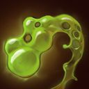
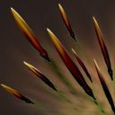
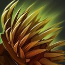
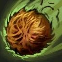
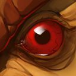
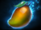
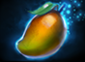
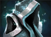
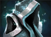

Dota 2 Builds
Bristleback
Ригварл никогда не уходил от драк и не поворачивался спиной к противнику, даже если тот был крупнее и сильнее его. Окрещенный пьяными толпами как Bristleback, он стал постоянным участником подпольных боев, что проводились в тавернах на тракте между Сломом и Эльзе. Однажды умелого бойца заприметил один трактирщик, искавший вышибалу в бар. За скромную выпивку он стал собирать с посетителей плату, следить за порядком и время от времени ломать конечности особо несговорчивым клиентам (а одному членистоногому бедняге однажды сломал целых пять). Но все же Ригварлу довелось встретить бойца, равного себе. Однажды во время очередной вечерней вахты, уже будучи навеселе от хмеля, он подошел за платой к одному кряжистому детине с севера и заплетающимся языком пробормотал: «Что-то не нравятся мне ваши бивни, уважаемый». Что тут началось! Это было побоище века! В бой бросилось с дюжину посетителей. Не уцелел ни один стул. Хотя Ригварл изрядно приложился к буянам, но и сам в полной мере схлопотал по печени. И все бы ничего, но случилось нечто страшное — клиент ушел, не заплатив за выпивку. За несколько недель раны вышибалы затянулись, а вырванные иглы отросли, но удар по чести был нанесен непростительный. Счет он оплатил из своего кармана, поклявшись выследить северянина и взыскать плату по полной. После этого он занялся тренировками, чего не делал никогда ранее, и неожиданно для себя сделал поразительное открытие. Расправив иглы и усмехнувшись сквозь зубы, он понял — иногда все же стоит показывать противнику спину.
Способности/Abulities
Viscous Nasal Goo
 Обильно сморкается на жертву, снижая её броню и скорость передвижения. Эффекты способности складываются, а время действия обновляется с каждым её применением.

Способность: направленная на юнита/ненаправленная (с Aghanim's Scepter)
Действует на: врагов
Дальность применения: 650 (Талант: 800)
Максимум эффектов: 4
Базовое снижение брони: 2
Снижение брони за каждый эффект: 1,5/2/2,5/3
Базовое замедление скорости передвижения: 15%
Замедление за каждый эффект: 3%/6%/9%/12%
Длительность на героях: 5
Длительность на крипах: 10
Простуду, подхваченную в снегах, Ригварл делает своим преимуществом.Quill Spray
 Выпускает во все стороны иглы, нанося урон всем врагам вокруг себя. Жертвы получают дополнительный урон за каждое попадание иглами за последние 14 сек.Способность: ненаправленная
Действует на: врагов
Тип урона: физический
Радиус: 700
Базовый урон: 25/45/65/85
Доп. урон за каждый эффект: 28/30/32/34 (Талант: 48/50/52/54)
Бонус к скорости передвижения в стойке шторма: 5/7/9/11%
Максимальный урон: 550
Длительность одного эффекта: 14
Честь вышибалы — острый вопрос. Как и его шипы.Bristleback
 Герой получает меньше урона от атак со спины и с боков. При получении 200 урона со спины применяется способность Quill Spray текущего уровня.Способность: пассивная
Действует на: себя
Угол спины: 70°
Угол боков: 110°
Снижение урона от атак в спину: 16%/24%/32%/40% (Талант: 24/32/40/48%)
Снижение урона от атак с боков: 8%/12%/16%/20% (Талант: 12/16/20/24%)
Предел урона: 200
Иногда бывает полезно повернуться спиной к врагу во время битвы.Hairball
 Отхаркивает в указанную область комок игл. Приземлившись, он лопается и применяет на всех врагов вокруг один эффект Viscous Nasal Goo и несколько эффектов Quill Spray.Способность: направленная на область
Действует на: врагов
Тип урона: физический
Дальность применения: 1500
Радиус: 700
Количество эффектов Quill Spray: 2
Интервал применения Quill Spray: 0,1
Количество эффектов Viscous Nasal Goo: 1
Для активации способности требуется Aghanim's Shard.
Warpath
 Герой нагоняет на себя ярость каждый раз, когда использует способность, повышая свои скорость передвижения и урон.Способность: пассивная
Действует на: себя
Макс. количество эффектов: 6/8/10
Доп. урон за каждый эффект: 20/25/30 (Талант: 38/43/48)
Доп. скорость за каждый эффект: 3%/4%/5%
Длительность одного эффекта: 16/18/20
«Держи себя в руках», — часто наставляла его мама. Но в битве ярость всегда к месту.Сборка/Builds
Starting items:

 

Early game:


 



YOUTUBE:GREYSHARK
ЭТА СБОРКА В STEAM